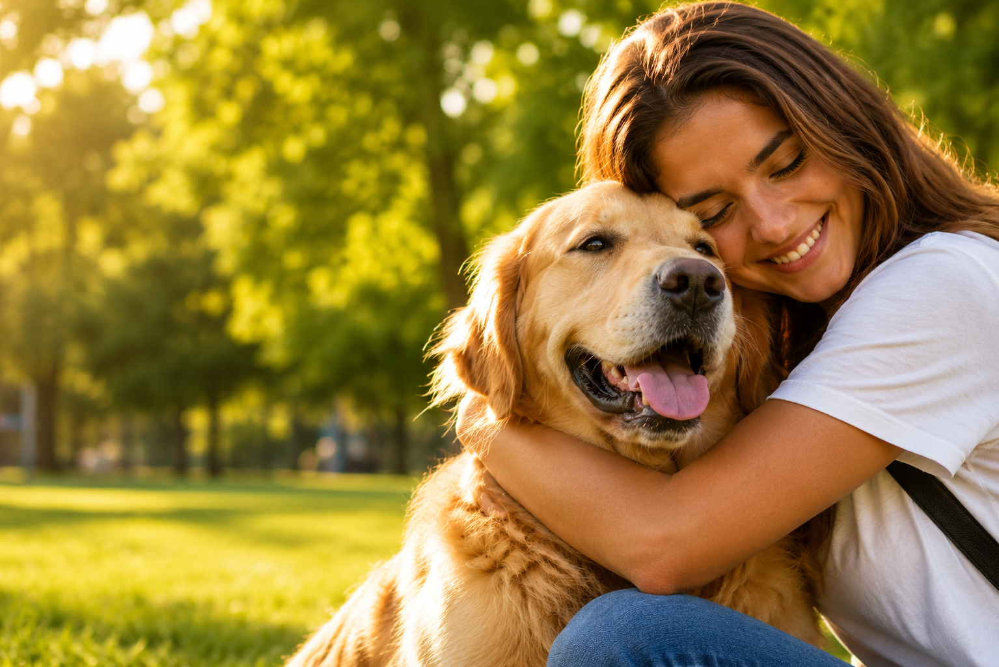

Huellas de Regreso
Vínculos restaurados, corazones en paz.
Vínculos restaurados, corazones en paz.
Publica mascotas perdidas o encontradas y ayuda a que regresen con quienes más las aman.
Reportar una mascota Buscar mascota
Mascotas reunidas
Reportes publicados
Mascotas encontradas
Registra la información de tu mascota perdida o encontrada con fotografías, ubicación y datos de contacto.
Miles de personas podrán ver el reporte y ayudarte a compartir la información.
Cuando alguien la encuentre podrá comunicarse contigo para que vuelva a su hogar.
Gracias a la ayuda de la comunidad, estas mascotas regresaron con sus familias.

Después de cinco días de búsqueda, Luna pudo regresar a casa gracias al reporte publicado en Huellas de Regreso.

Un ciudadano reconoció a Max gracias a la publicación y logró contactar a su familia.

Mía volvió a casa luego de que una persona encontrara su reporte en la plataforma.